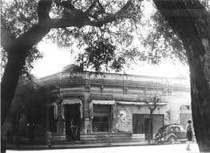
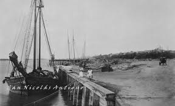
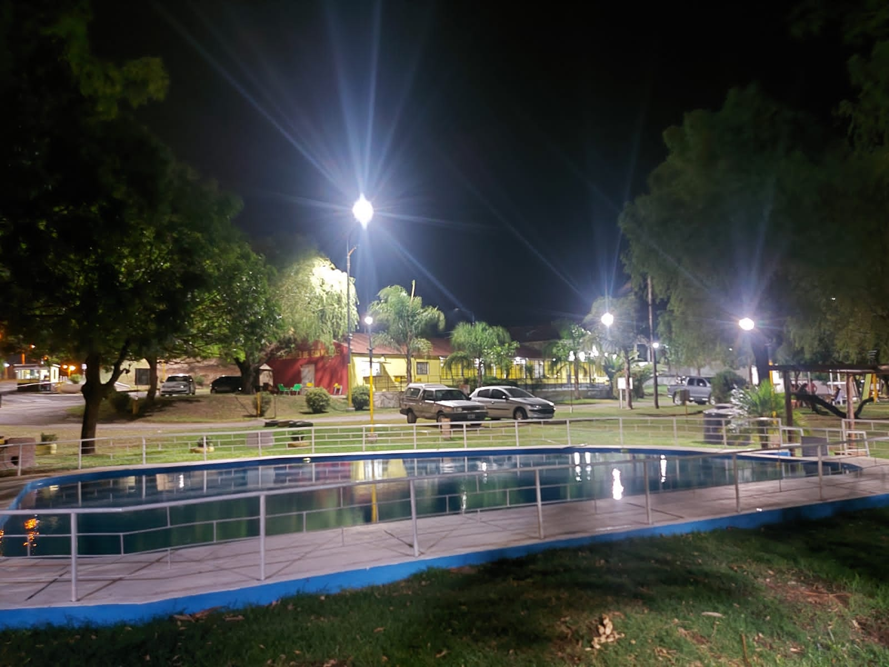

Nuestra fecha de inauguracion fue el 1º de Octubre de 1939
Un grupo de pioneros reunidos en un predio prestado
por la Municipalidad de la ciudad de San Nicolas resolvieron fundar el Club de Pescadores San Nicolas,
quedando instalada la Administración de la Institución en la esquina de Rivadavia y Pombo.

En el año 1952 durante el mandato del Sr. Presidente Don Cesar Wursten y con la
colaboración del Ingeniero Caviglia se consiguió un permiso de concesión para la
construcción de un muelle para la práctica de pesca deportiva en su actual ubicación en calle Alem 1352.

Año 1976, la primera etapa del actual muelle, consistió en la construcción de un muelle de cemento,
internándose en el río, 100 m. En el año 1999, bajo la presidencia del Sr. Héctor Hartkopf, se continuó
con la extensión del muelle, internándose en el rió hasta un total de 180 m. de recorrido.
Paralelamente se fueron incorporando instalaciones y la sede central del club cuenta con amplias
parrillas y quincho cubiertos, solarium, buffet/bar, 2 baños, iluminación para la pesca nocturna en todo
su perímetro y un refugio con baño sobre el ingreso al morro.

En el año 2012, bajo la presidencia del Sr. Juan Esteban Wagner, esta sede fue remodelada, contando en la actualidad
instalaciones sanitarias y electricas, pisos, oficinas, salas de reuniones, techado de patio descubierto, salon de
fiestas para mas de 300 personas, medidas de seguridad, y guarderia nautica para mas de 100 embarcaciones.

Durante la epoca de la pandemia (Covid-19), el Presidente Sr. Juan Esteban N. Wagner, ha realizado el pedido de concesion
para adquirir terrenos aledaños, para poder agrandar el muelle de pesca, ademas de ampliar la pileta de natacion, y darle
lugar a Prefectura Naval Argentina, para los botes de busqueda de personas.